Five rooms face the sea
The sea front of the house, every window drawn to scale against the others. Three more rooms face the desert behind it.
See all eight rooms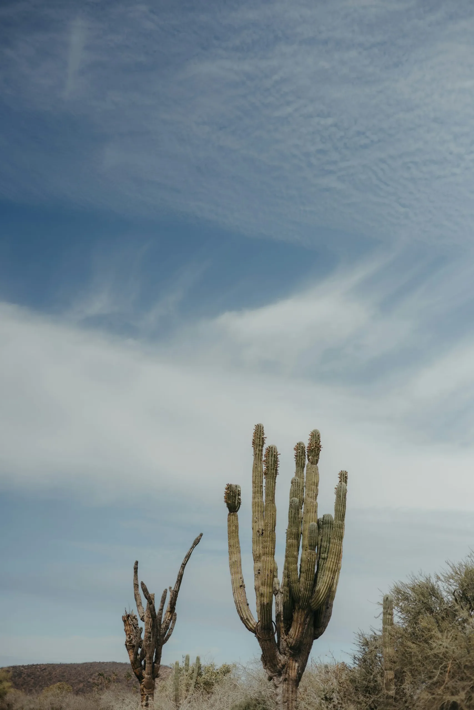


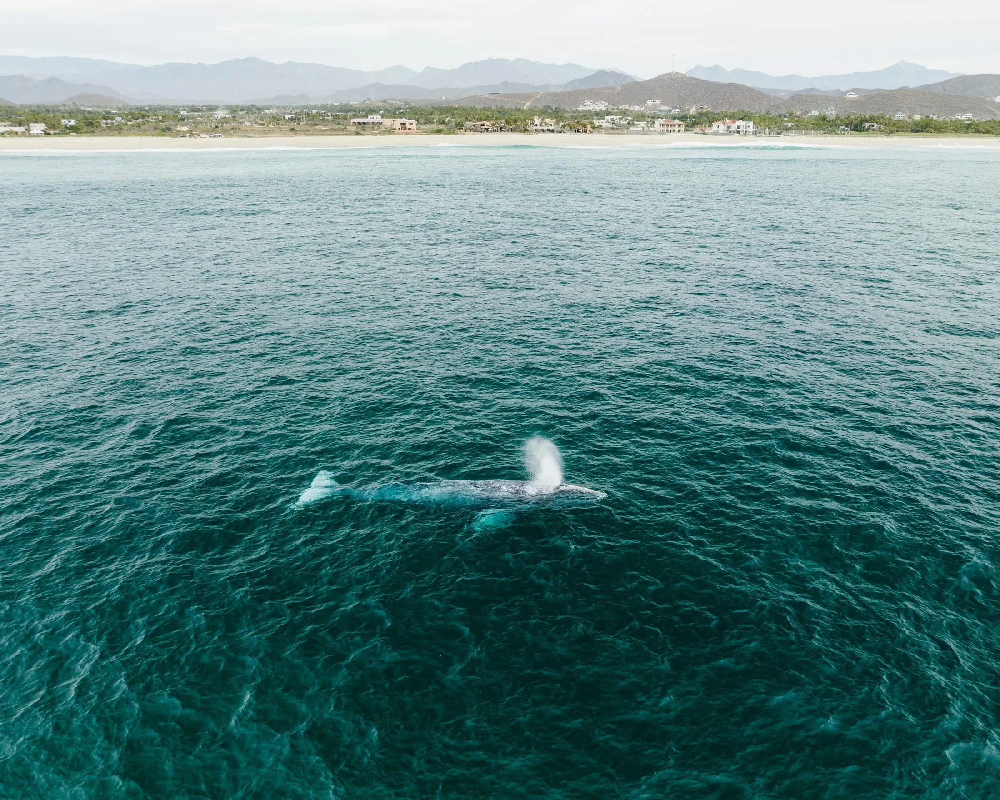
Eight rooms on a cliff above the Pacific, south of Todos Santos. Each one is built around a single window, so you choose a room by its view.
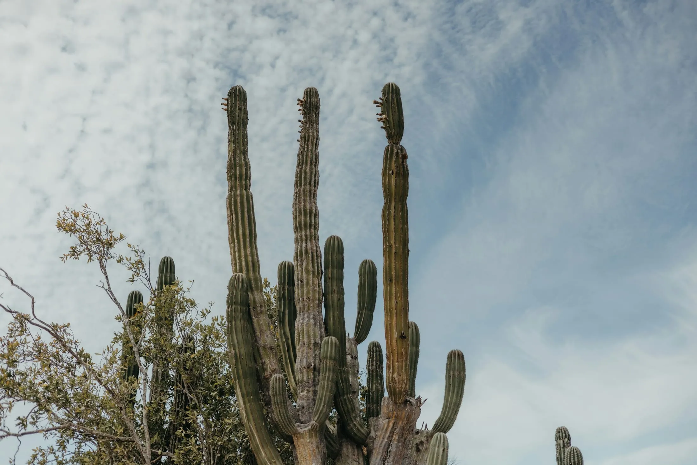
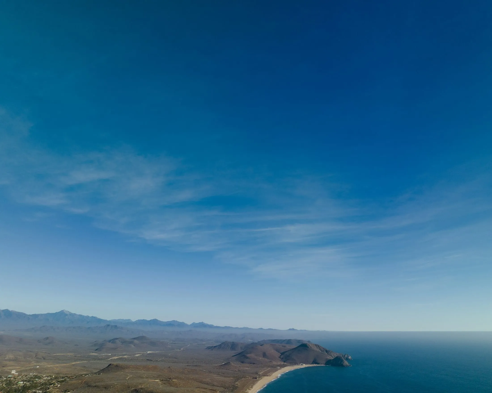
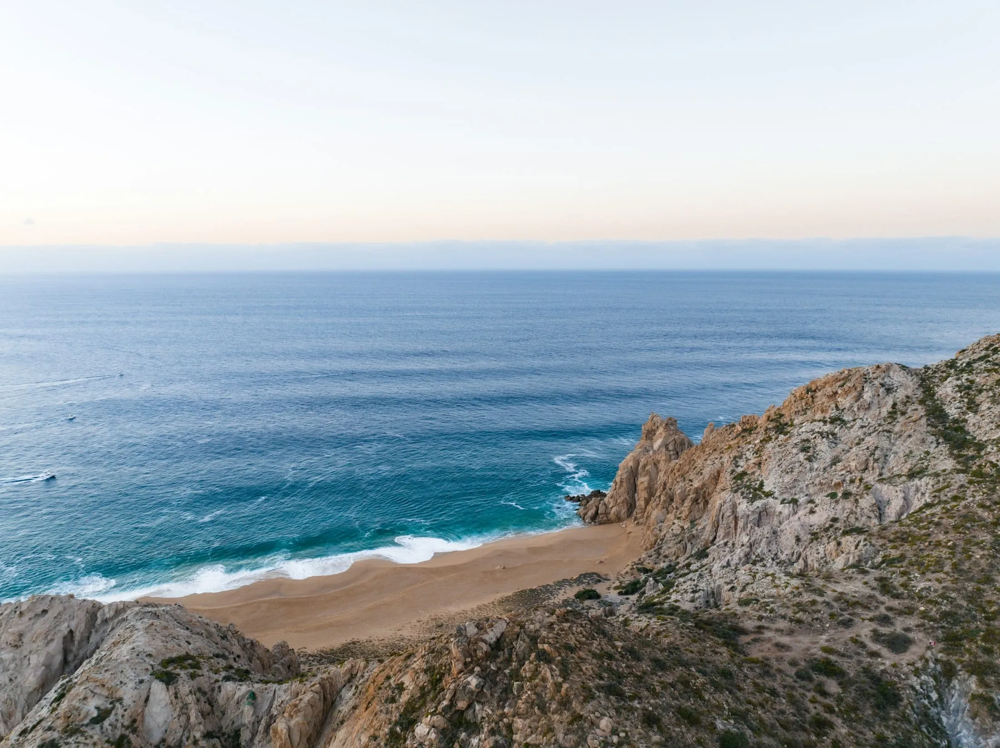
4 m of glass at bed height · 38 m² · king · from $620
You wake up level with the horizon. From December to April the gray whales pass the window.
Check dates for the Long Room ↗The sea front of the house, every window drawn to scale against the others. Three more rooms face the desert behind it.
See all eight rooms
The desert side:6 · The Slot7 · The Hill Room8 · The Valley Room
We placed every window first, on the sea, the point or the desert, and then built a room behind it. The walls are rammed earth from the site, 60 cm thick. That depth is the shadow inside every window on this page.
Eight rooms, no pool and no televisions. At night the loudest thing in the house is the surf.
Lucía Ibarra and Tomás Reyes
built the house in 2019 and run it
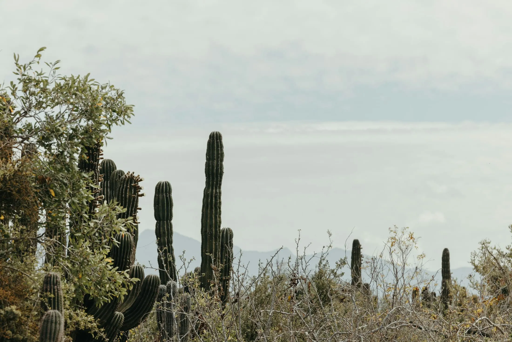
Breakfast is included every morning. Four nights a week everyone in the house eats one dinner at one table.
Breakfast
8 to 10:30 am, included
Eggs, tortillas made that morning, fruit, coffee from Oaxaca
Dinner
Thursday to Sunday, 7:30 pm
$65 a person
Fish from the Punta Lobos boats, vegetables from El Pescadero
Km 58 on Carretera Federal 19, south of Todos Santos. The last 2 km are a graded dirt road, fine in any car.
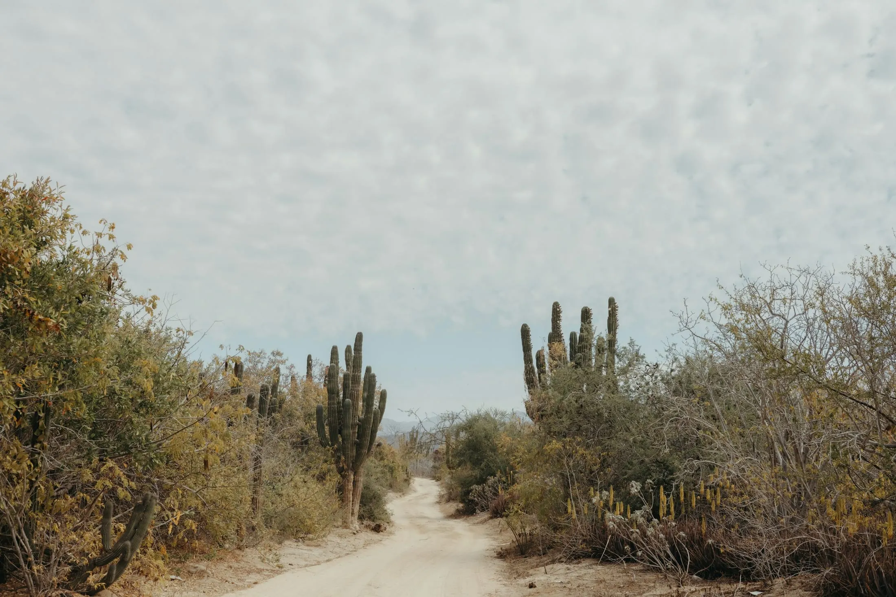
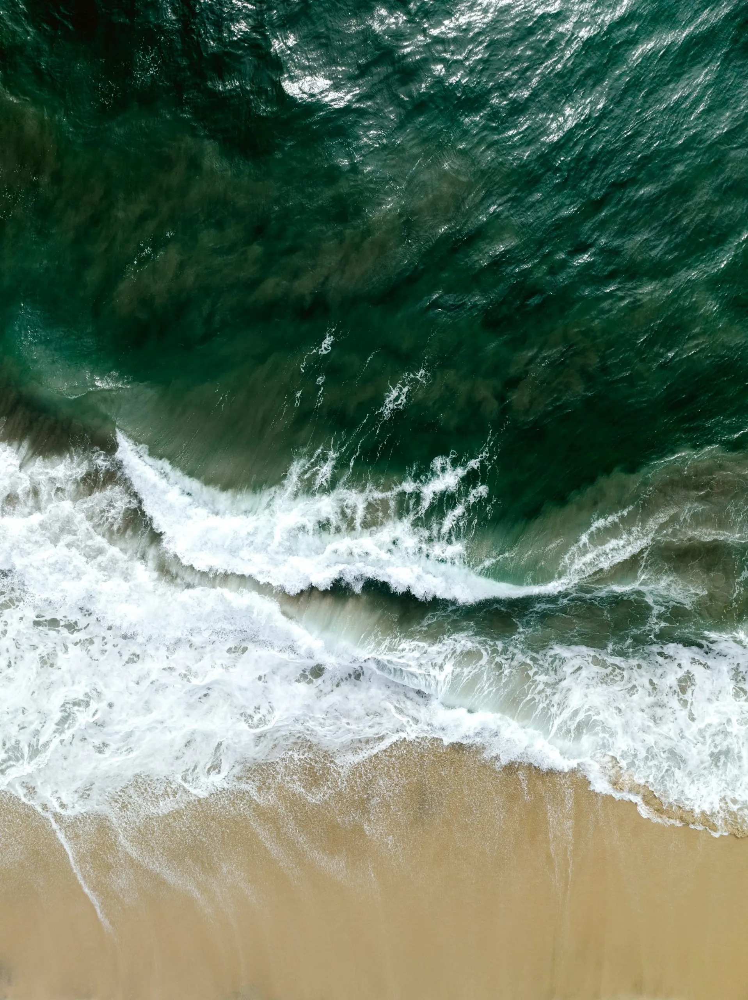
“We booked the Ledge for the whales and spent most of the week on the window seat watching the surf instead.”
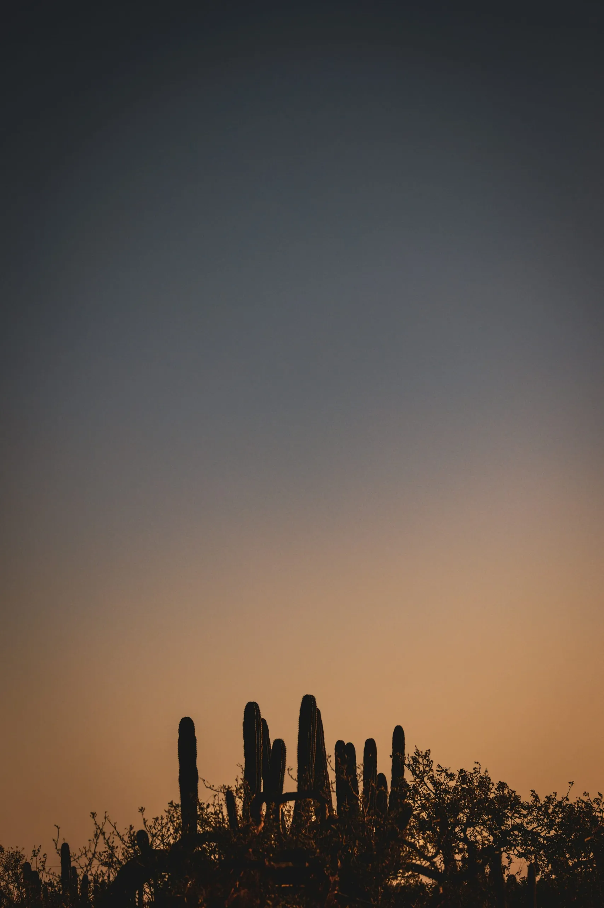
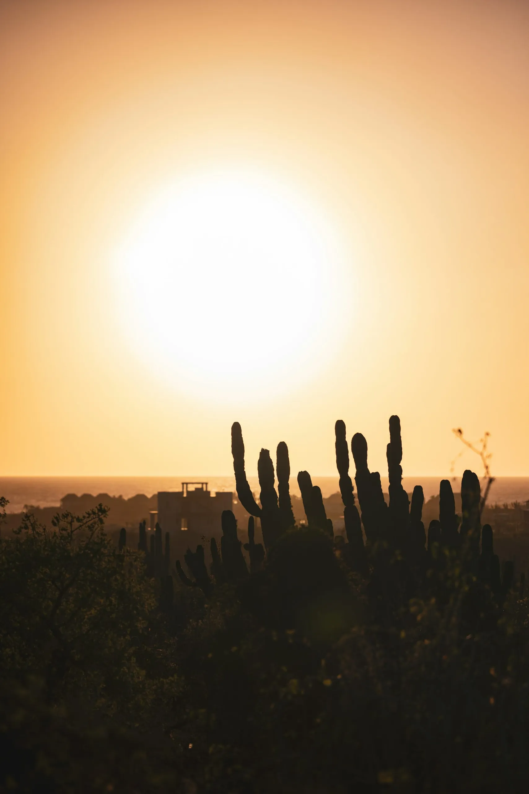
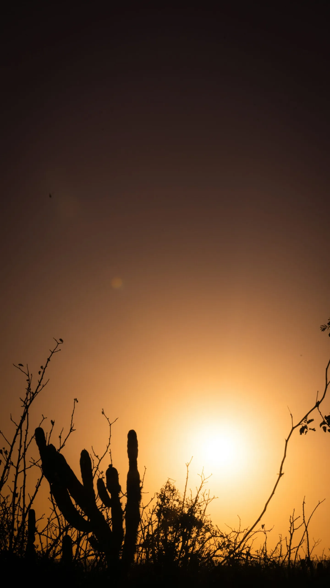
Rooms from $360 a night for two, breakfast included. Two nights at least, three over Christmas and Easter.
Check dates ↗